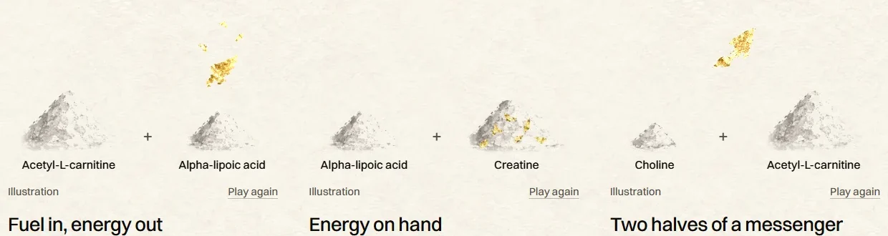
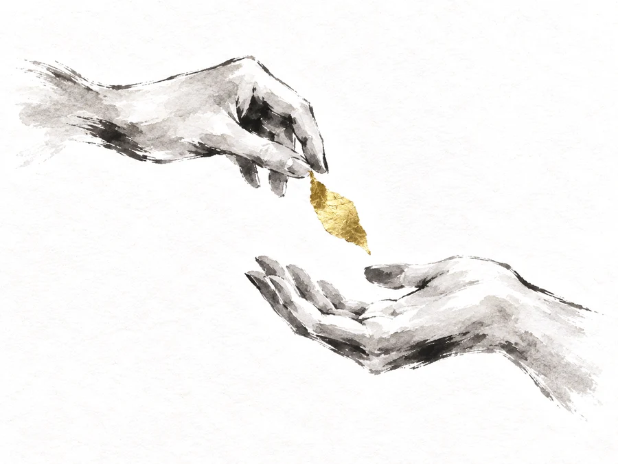
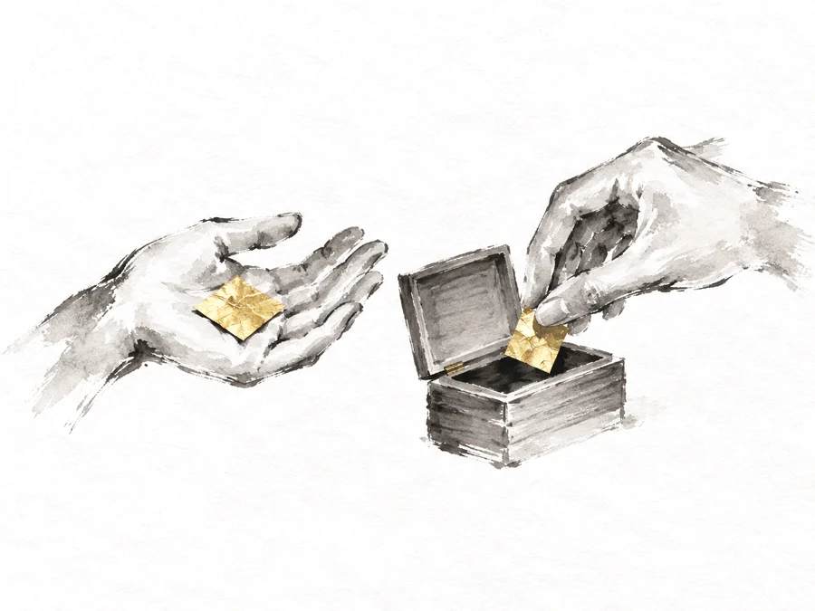
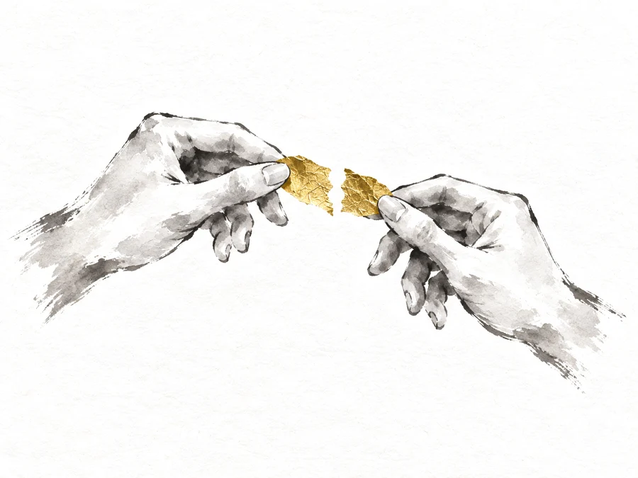
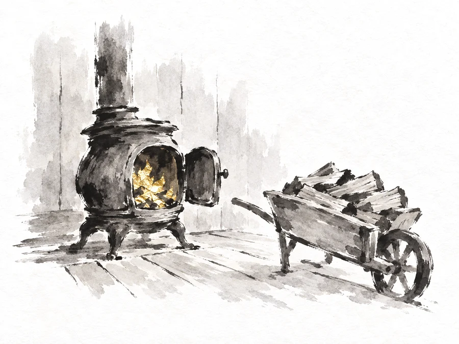
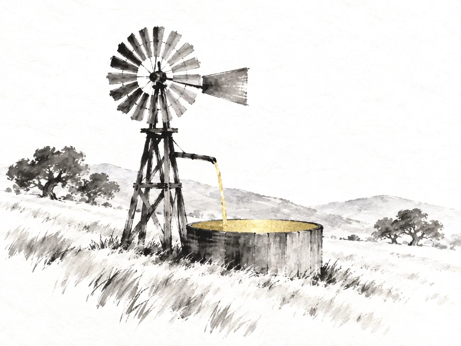
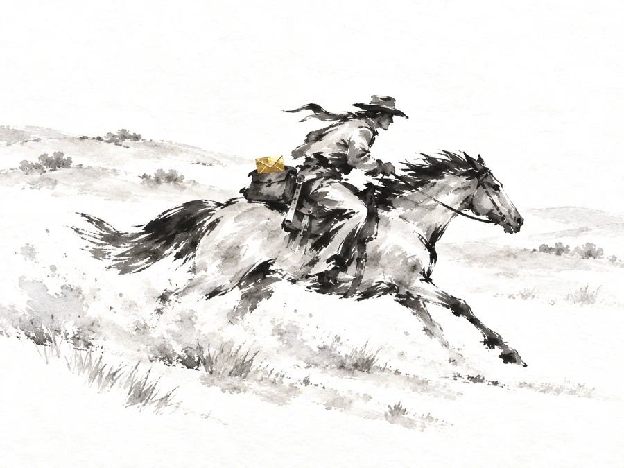
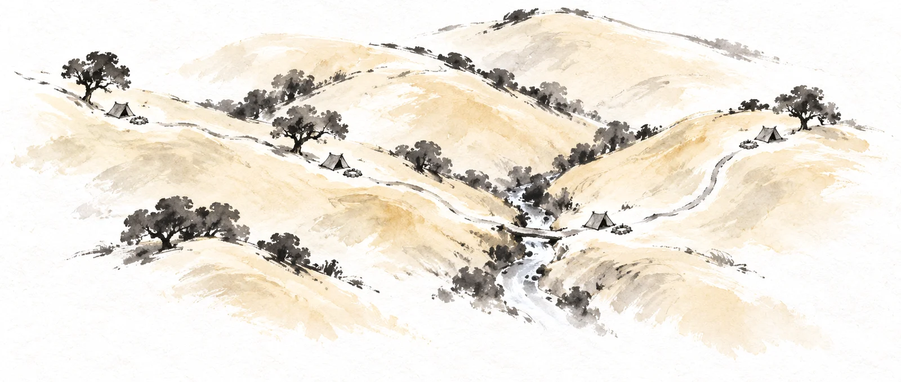

<title>NuriCell Pairs Ideas</title>
<meta name="claude:viewport-fit-sides" content="cover">
<link rel="preconnect" href="https://fonts.googleapis.com">
<link rel="preconnect" href="https://fonts.gstatic.com" crossorigin>
<link rel="stylesheet" href="https://fonts.googleapis.com/css2?family=Ysabeau:wght@400;500&family=Instrument+Sans:wght@400;500;600&display=swap">
<style>
  /* Layout: one column on the site's rice paper. Today's section first (the problem), then three
     ideas, each as the section would look on the page, then my pick. One light world, like the
     site, so it keeps its own colours in a dark viewer. */
  :root {
    --paper: #f8f3ea;
    --ink: #0c0b0a;
    --muted: #514e48;
    --line: rgba(28, 27, 25, 0.16);
    --hair: rgba(28, 27, 25, 0.3);
    --wash: rgba(28, 27, 25, 0.07);
    --gold-ink: #7d5f1c;
    --gold: #c29a3a;
    --title: "Ysabeau", "Iowan Old Style", "Palatino Linotype", Georgia, serif;
    --body: "Instrument Sans", system-ui, -apple-system, "Segoe UI", Roboto, sans-serif;
    --ease: cubic-bezier(0.22, 0.61, 0.36, 1);
    color-scheme: light;
  }
  body {
    background: var(--paper) url("art/paper.webp") 0 0 / 800px 800px repeat;
    color: var(--ink);
    font: 18px/1.6 var(--body);
    -webkit-font-smoothing: antialiased;
  }
  *, *::before, *::after { box-sizing: border-box; }
  h1, h2, h3, h4, p, ul, figure { margin: 0; }
  ul { padding: 0; list-style: none; }
  button { font: inherit; color: inherit; }
  :focus-visible { outline: 2px solid var(--ink); outline-offset: 3px; }

  .page {
    max-width: 1240px;
    margin: 0 auto;
    padding-left: max(16px, env(safe-area-inset-left, 0px));
    padding-right: max(16px, env(safe-area-inset-right, 0px));
    padding-block: 40px 120px;
    display: grid;
    gap: clamp(72px, 10vw, 120px);
  }

  /* The page's own words: Ysabeau, like the site's titles. */
  .tag { font-size: 0.82rem; letter-spacing: 0.09em; text-transform: uppercase; color: var(--gold-ink); }
  .intro { display: grid; gap: 14px; max-width: 46rem; }
  .intro h1 { font: 500 clamp(2rem, 5.4vw, 3.2rem)/1.08 var(--title); text-wrap: balance; }
  .intro p { color: var(--muted); }
  .today { display: grid; gap: 8px; margin-top: 10px; }
  .today img { width: 100%; max-width: 760px; height: auto; border: 1px solid var(--line); }
  .today figcaption { font-size: 0.92rem; color: var(--muted); }

  .idea { display: grid; gap: 40px; }
  .idea > header { display: grid; gap: 10px; max-width: 46rem; border-top: 1px solid var(--hair); padding-top: 32px; }
  .idea > header h2 { font: 500 clamp(1.8rem, 4.2vw, 2.6rem)/1.1 var(--title); text-wrap: balance; }
  .idea > header h2 span { color: var(--gold-ink); }
  .idea > header p { color: var(--muted); }
  .idea > header p b { color: var(--ink); font-weight: 600; }

  /* ── The section as it would sit on the page (A and B) ── */
  .section { display: grid; gap: 36px; }
  .section > h3 {
    font: 500 clamp(1.9rem, 3.6vw, 2.6rem)/1.1 var(--body);
    letter-spacing: -0.025em; text-align: center; text-wrap: balance;
  }
  .scenes { display: grid; gap: 56px; }
  @media (min-width: 900px) { .scenes { grid-template-columns: repeat(3, minmax(0, 1fr)); gap: 40px; } }
  .scene { display: grid; gap: 12px; align-content: start; min-width: 0; }
  .scene img { width: 100%; max-width: 100%; height: auto; aspect-ratio: 4 / 3; mix-blend-mode: multiply; }
  .pair { font-weight: 500; font-size: 0.98rem; }
  .pair i { font-style: normal; color: var(--muted); padding-inline: 4px; }
  .scene h4 { font: 500 clamp(1.35rem, 2vw, 1.6rem)/1.2 var(--body); letter-spacing: -0.015em; }
  .scene .line { font-size: 1.04rem; }
  .scene .evidence { color: var(--gold-ink); font-size: 0.98rem; }
  .moves { font-size: 0.9rem; color: var(--muted); border-left: 2px solid var(--line); padding-left: 10px; }
  .note { text-align: center; color: var(--muted); font-size: 0.92rem; max-width: 40rem; margin: 0 auto; text-wrap: balance; }
  .label { font-size: 0.86rem; color: var(--muted); }

  /* ── C: the gold trail ── */
  .map { position: relative; width: 100%; max-width: 100%; aspect-ratio: 1672 / 710; }
  .map img { position: absolute; inset: 0; width: 100%; height: 100%; mix-blend-mode: multiply; }
  .map svg { position: absolute; inset: 0; width: 100%; height: 100%; overflow: visible; }
  .map path {
    fill: none; stroke: var(--gold); stroke-width: 7; stroke-linecap: round; stroke-linejoin: round;
    mix-blend-mode: multiply; opacity: 0; stroke-dasharray: var(--len); stroke-dashoffset: var(--len);
    transition: opacity 0.3s var(--ease), stroke-dashoffset 1.4s var(--ease);
  }
  .map path.on { opacity: 0.9; stroke-dashoffset: 0; }
  .camp {
    position: absolute; transform: translate(-50%, -100%); white-space: nowrap;
    font: 500 clamp(0.72rem, 1.5vw, 1rem)/1.2 var(--body);
    background: rgba(248, 243, 234, 0.86); padding: 2px 8px; border-radius: 999px;
    transition: color 0.3s var(--ease), background 0.3s var(--ease);
  }
  .camp.on { background: var(--ink); color: var(--paper); }
  .stretches { display: flex; flex-wrap: wrap; justify-content: center; gap: 10px; }
  .stretches button {
    border: 1px solid var(--hair); background: var(--paper); border-radius: 999px; padding: 10px 18px;
    min-height: 44px; cursor: pointer; font-weight: 500;
    transition: background 0.3s var(--ease), color 0.3s var(--ease);
  }
  .stretches button[aria-pressed="true"] { background: var(--ink); color: var(--paper); border-color: var(--ink); }
  .stretches button:not([aria-pressed="true"]):hover { background: var(--wash); }
  .story { display: grid; gap: 10px; max-width: 40rem; margin: 0 auto; text-align: center; min-height: 11rem; }
  .story h4 { font: 500 clamp(1.4rem, 2.4vw, 1.8rem)/1.2 var(--body); letter-spacing: -0.015em; }
  .story .line { font-size: 1.06rem; }
  .story .evidence { color: var(--gold-ink); }
  @media (prefers-reduced-motion: reduce) { .map path { transition: none; } }

  /* ── My pick ── */
  .pick { display: grid; gap: 14px; max-width: 46rem; border-top: 1px solid var(--hair); padding-top: 32px; }
  .pick h2 { font: 500 clamp(1.8rem, 4.2vw, 2.6rem)/1.1 var(--title); }
  .pick ul { display: grid; gap: 8px; }
  .pick li { padding-left: 1.1em; position: relative; }
  .pick li::before { content: ""; position: absolute; left: 0; top: 0.72em; width: 6px; height: 6px; border-radius: 50%; background: var(--gold); }
  .pick .reply { font-size: 1.15rem; font-weight: 500; }
</style>

<main class="page">
  <section class="intro">
    <p class="tag">NuriCell · Why these four work together</p>
    <h1>Three ideas without the powder</h1>
    <p>Today each pair is two small heaps of white powder with gold on top. On their own, away from the capsule, they can look like drugs. Each idea below keeps the same three pairs and the same words. Only the pictures change.</p>
    <figure class="today">
      
      <figcaption>Today, on the live page</figcaption>
    </figure>
  </section>

  <!-- ───────── A ───────── -->
  <section class="idea" aria-labelledby="a-title">
    <header>
      <p class="tag">Idea A</p>
      <h2 id="a-title"><span>A.</span> Two hands</h2>
      <p>Each pair is two hands, one for each ingredient. The gold leaf shows what they do together: <b>passed and caught</b>, <b>kept for later</b>, <b>two halves made one</b>. On the page the leaf moves once as you arrive, like the gold in the capsule above.</p>
    </header>
    <div class="section">
      <h3>Why these four work together</h3>
      <ul class="scenes">
        <li class="scene">
          
          <p class="pair">Acetyl-L-carnitine <i>+</i> Alpha-lipoic acid</p>
          <h4>Fuel in, energy out</h4>
          <p class="line">Acetyl-L-carnitine carries fuel into your mitochondria. Alpha-lipoic acid helps turn it into energy, and helps clear the wear that making energy leaves behind.</p>
          <p class="evidence">In Dr. Liu’s 2002 animal studies, the two together did more than either one alone.</p>
          <p class="moves">Moving: the leaf drops into the open hand and catches the light.</p>
        </li>
        <li class="scene">
          
          <p class="pair">Alpha-lipoic acid <i>+</i> Creatine</p>
          <h4>Energy on hand</h4>
          <p class="line">Creatine keeps some of that energy in reserve, ready for the moments your brain and muscles need it fast.</p>
          <p class="moves">Moving: the second leaf is laid in the box and the lid stays open.</p>
        </li>
        <li class="scene">
          
          <p class="pair">Choline <i>+</i> Acetyl-L-carnitine</p>
          <h4>Two halves of a messenger</h4>
          <p class="line">Your body joins choline with an acetyl group, which acetyl-L-carnitine can supply, to make acetylcholine, a messenger between nerve cells.</p>
          <p class="moves">Moving: the two halves meet and become one leaf.</p>
        </li>
      </ul>
      <p class="label">Each picture labelled “Illustration”, as today.</p>
    </div>
  </section>

  <!-- ───────── B ───────── -->
  <section class="idea" aria-labelledby="b-title">
    <header>
      <p class="tag">Idea B</p>
      <h2 id="b-title"><span>B.</span> On the ranch</h2>
      <p>Three things on an old California ranch that need each other: <b>the firewood and the stove</b>, <b>the windmill and its tank</b>, <b>the rider and the horse</b>. Each one is a little story you get at a glance. Gold marks where the energy is.</p>
    </header>
    <div class="section">
      <h3>Why these four work together</h3>
      <ul class="scenes">
        <li class="scene">
          
          <p class="pair">Acetyl-L-carnitine <i>+</i> Alpha-lipoic acid</p>
          <h4>Fuel in, energy out</h4>
          <p class="line">Acetyl-L-carnitine carries fuel into your mitochondria. Alpha-lipoic acid helps turn it into energy, and helps clear the wear that making energy leaves behind.</p>
          <p class="evidence">In Dr. Liu’s 2002 animal studies, the two together did more than either one alone.</p>
          <p class="moves">Moving: the stove’s gold fire catches the light as you arrive.</p>
        </li>
        <li class="scene">
          
          <p class="pair">Alpha-lipoic acid <i>+</i> Creatine</p>
          <h4>Energy on hand</h4>
          <p class="line">Creatine keeps some of that energy in reserve, ready for the moments your brain and muscles need it fast.</p>
          <p class="moves">Moving: the windmill turns once and the tank fills to the brim.</p>
        </li>
        <li class="scene">
          
          <p class="pair">Choline <i>+</i> Acetyl-L-carnitine</p>
          <h4>Two halves of a messenger</h4>
          <p class="line">Your body joins choline with an acetyl group, which acetyl-L-carnitine can supply, to make acetylcholine, a messenger between nerve cells.</p>
          <p class="moves">Moving: the gold letter catches the light as the rider passes.</p>
        </li>
      </ul>
      <p class="label">Each picture labelled “Illustration”, as today.</p>
    </div>
  </section>

  <!-- ───────── C ───────── -->
  <section class="idea" aria-labelledby="c-title">
    <header>
      <p class="tag">Idea C</p>
      <h2 id="c-title"><span>C.</span> The gold trail</h2>
      <p>One painting instead of three: a trail over California hills with four camps, one for each ingredient. Each stretch of trail between two camps is a pair. <b>Tap a stretch</b> and it lights in gold, and its story shows under the map.</p>
    </header>
    <div class="section">
      <h3>Why these four work together</h3>
      <div class="map" id="map">
        
        <svg viewBox="0 150 1672 710" aria-hidden="true">
          <path data-stretch="0" d="M 268 378 C 330 384, 400 398, 470 410 S 560 440, 598 452"/>
          <path data-stretch="1" d="M 662 470 C 740 486, 820 520, 880 552 S 970 588, 1010 586 S 1070 576, 1094 568"/>
          <path data-stretch="2" d="M 1160 560 C 1220 546, 1280 524, 1310 494 S 1340 440, 1388 420"/>
        </svg>
        <span class="camp" data-camp="choline" style="left: 13.3%; top: 23.9%">Choline</span>
        <span class="camp" data-camp="alcar" style="left: 37%; top: 37.2%">Acetyl-L-carnitine</span>
        <span class="camp" data-camp="ala" style="left: 66.5%; top: 53.1%">Alpha-lipoic acid</span>
        <span class="camp" data-camp="creatine" style="left: 85.2%; top: 30.6%">Creatine</span>
      </div>
      <div class="stretches" role="group" aria-label="Pick a stretch of the trail">
        <button type="button" id="stretch-0" data-stretch="0" aria-pressed="false">Two halves of a messenger</button>
        <button type="button" id="stretch-1" data-stretch="1" aria-pressed="true">Fuel in, energy out</button>
        <button type="button" id="stretch-2" data-stretch="2" aria-pressed="false">Energy on hand</button>
      </div>
      <div class="story" aria-live="polite">
        <p class="pair" id="story-pair"></p>
        <h4 id="story-title"></h4>
        <p class="line" id="story-line"></p>
        <p class="evidence" id="story-evidence"></p>
      </div>
    </div>
  </section>

  <!-- ───────── Pick ───────── -->
  <section class="pick" aria-labelledby="pick-title">
    <p class="tag">My pick</p>
    <h2 id="pick-title">B, on the ranch</h2>
    <ul>
      <li>Each picture explains its pair before you read a word: wood feeds the stove, the windmill fills the tank, rider and horse carry the letter.</li>
      <li>It is the most fun of the three, and it is California through and through.</li>
      <li>A is calmer and closest to today, but the hands say “together” more than they say what each one does.</li>
      <li>C is the most hands-on, but its four camps are small on a phone, and a map of ingredients asks more of the reader.</li>
      <li>The worry with B: three new paintings on a page that already has many. They take the heaps’ place and stay the same small size.</li>
    </ul>
    <p class="reply">Reply A, B or C, or tell me something else.</p>
  </section>
</main>

<script>
  (() => {
    const stories = [
      { pair: ["Choline", "Acetyl-L-carnitine"], camps: ["choline", "alcar"], title: "Two halves of a messenger",
        line: "Your body joins choline with an acetyl group, which acetyl-L-carnitine can supply, to make acetylcholine, a messenger between nerve cells.", evidence: "" },
      { pair: ["Acetyl-L-carnitine", "Alpha-lipoic acid"], camps: ["alcar", "ala"], title: "Fuel in, energy out",
        line: "Acetyl-L-carnitine carries fuel into your mitochondria. Alpha-lipoic acid helps turn it into energy, and helps clear the wear that making energy leaves behind.",
        evidence: "In Dr. Liu’s 2002 animal studies, the two together did more than either one alone." },
      { pair: ["Alpha-lipoic acid", "Creatine"], camps: ["ala", "creatine"], title: "Energy on hand",
        line: "Creatine keeps some of that energy in reserve, ready for the moments your brain and muscles need it fast.", evidence: "" },
    ];
    const map = document.getElementById("map");
    const paths = [...map.querySelectorAll("path")];
    paths.forEach((p) => p.style.setProperty("--len", Math.ceil(p.getTotalLength()) + 1));
    const buttons = [...document.querySelectorAll(".stretches button")];
    const show = (i) => {
      const s = stories[i];
      paths.forEach((p, k) => p.classList.toggle("on", k === i));
      buttons.forEach((b, k) => b.setAttribute("aria-pressed", String(k === i)));
      map.querySelectorAll(".camp").forEach((c) => c.classList.toggle("on", s.camps.includes(c.dataset.camp)));
      document.getElementById("story-pair").innerHTML = `${s.pair[0]} <i>+</i> ${s.pair[1]}`;
      document.getElementById("story-title").textContent = s.title;
      document.getElementById("story-line").textContent = s.line;
      const ev = document.getElementById("story-evidence");
      ev.textContent = s.evidence;
      ev.hidden = !s.evidence;
    };
    buttons.forEach((b) => b.addEventListener("click", () => show(Number(b.dataset.stretch))));
    show(1);
  })();
</script>
